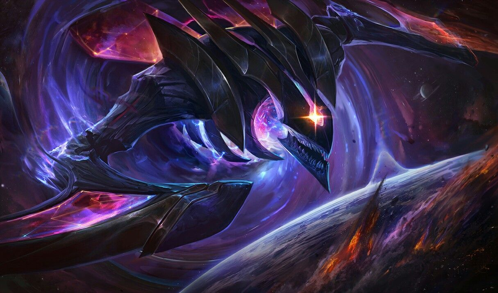
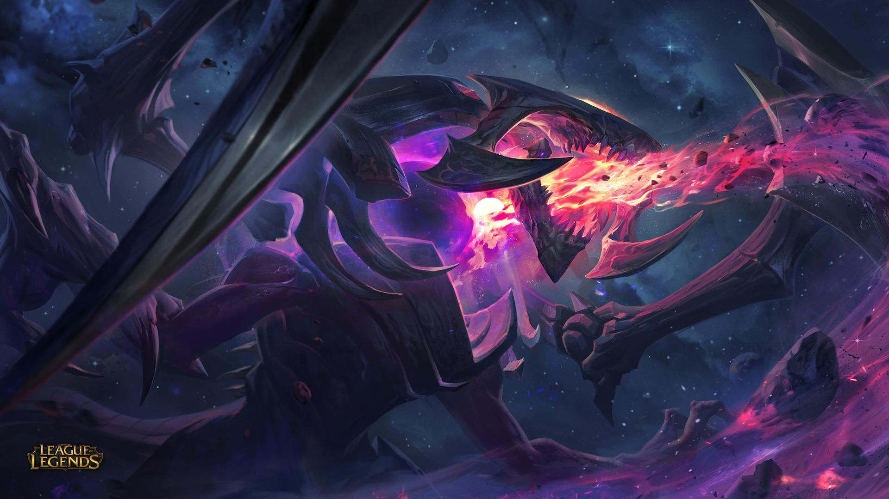

Nascida dos restos de um sistema solar magnificamente avançado em tecnologia, Orianna serve à Estrela Negra com meticulosa precisão. Ela dança através das galáxias em uma performance infinitamente devastadora, a única testemunha é a trilha silenciosa da destruição deixada em seu rastro.

Kha zix Estrela Negra
Kha'Zix, um predador perverso do Vazio, se infiltrou em Valoran para devorar as criaturas mais promissoras desta terra. A cada abate, ele devora a força de sua presa e se torna mais poderoso. Rengar, a única criatura a qual ele considera seu equivalente, é o que ele mais deseja conquistar e consumir.
Jarvan Estrela Negra
Único filho do rei, o príncipe Jarvan é o herdeiro natural do trono de Demacia. Criado como um exemplo das grandes virtudes de sua nação, ele deve conciliar as grandes expectativas que existem sobre ele com seu próprio desejo de lutar nas linhas de frente. Guerreiro excepcional, Jarvan inspira suas tropas com sua coragem e determinação, ostentando as cores da sua família e revelando sua verdadeira força como futuro líder de seu povo.

Cho gath Estrela Negra
A partir do momento em que Cho'Gath emergiu da terra para a luz do sol ofuscante de Runeterra, a besta foi motivada por pura fome insaciável. A mais perfeita expressão do desejo do Vazio de consumir toda a vida, a biologia complexa de Cho'Gath rapidamente converte matéria em crescimento corporal novo, aumentando sua massa e densidade muscular ou endurecendo sua carapaça externa como um diamante orgânico. Quando crescer não supre as necessidades dessa criatura do Vazio, ele vomita o material em excesso como espinhos afiados, deixando sua presa espetada e pronta para ser devorada mais tarde.